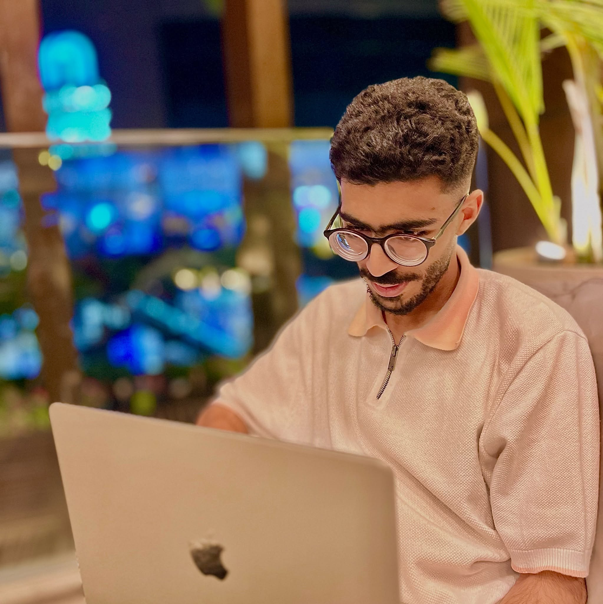

Data Analyst & Business Systems Professional
Cairo, Egypt | ahmed3bdelhamedwork@gmail.com
Download Full CVProfessional in IT and Accounting with a strong background in data analysis and systems management. Certified in advanced credentials that enhance technical skills, problem-solving, and organizational performance.
Business Information Systems[cite: 1]
Future Academy (2027) | GPA: 3.12 (Very Good)[cite: 1]
Junior Accountant Trainee | Yasser Abdel Mageed Office (2025-2026)[cite: 1]
Banker Internship | Banque Misr & CIB Egypt (2025-2026)[cite: 1]
Financial Auditor | HMT Groups (2024-2025)[cite: 1]
Reduced operational costs by 15% through contract review and expense management[cite: 1].